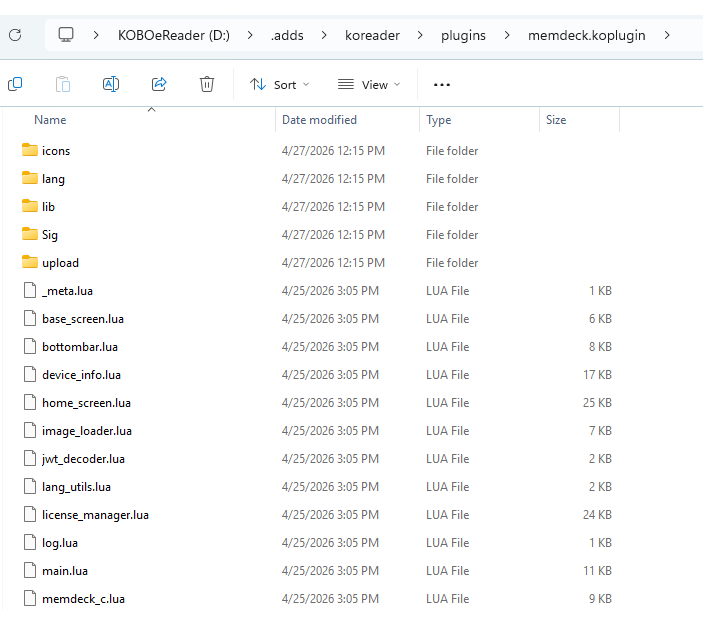
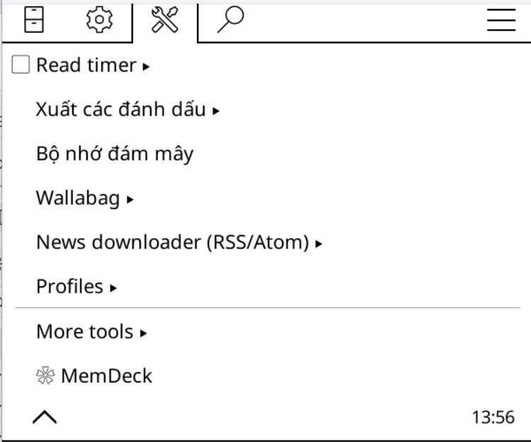
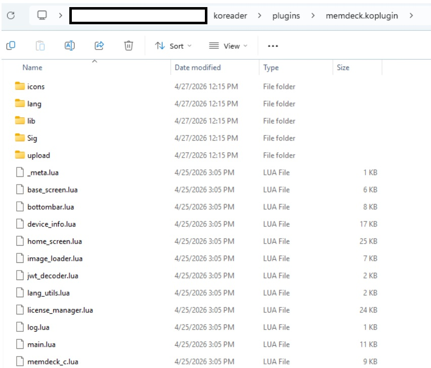
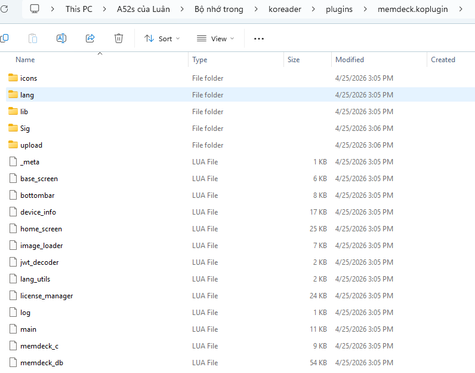

Cài MemDeck trong 5 phút
Tải đúng file cho máy của bạn, chép vào KOReader và bắt đầu học. Có ảnh cho từng bước.
Yêu cầu hệ thống
Điều kiện để cài và dùng plugin
Thiết bị hỗ trợ
- Kobo (mọi đời)
- Kindle (mọi đời, đã cài KOReader)
- PocketBook
- Android 5.0+
Phần mềm
- KOReader 2024.01 trở lên
- Android chưa có KOReader: cài APK ở mục Tải về
- Kobo / Kindle / PocketBook chưa có KOReader: liên hệ để được hỗ trợ cài
Dung lượng
- Plugin: ~1 MB
- Dữ liệu và bộ thẻ: ~9 MB
- Tổng: khoảng 10 MB
Tải plugin
Chọn file phù hợp với thiết bị của bạn
Plugin cho máy đọc e-ink và Android 32-bit
Kobo · Kindle · PocketBook · Android 32-bit
Plugin cho Android 64-bit
Điện thoại và máy đọc Android 64-bit
KOReader cho Android
Máy Android chưa có KOReader thì cài thêm file APK
Cài đặt
Các bước chi tiết cho từng dòng máy
Cần tải những gì?
- 1
Giải nén file
memdeck.koplugin_update_pack.zipĐổi tên thư mục thành
memdeck.koplugin. Bên trong thư mục này phải là các file.luavà các thư mục của plugin.Đúngmemdeck.koplugin/main.lua, base_screen.lua…Saimemdeck.koplugin/memdeck.koplugin/main.lua… - 2
Kết nối Kobo với máy tính
Dùng cáp USB để kết nối máy với máy tính.
- 3
Chép thư mục plugin
Chép thư mục
memdeck.kopluginvào:KOBOeReader (E:)\.adds\koreader\plugins
- 4
Kiểm tra cài đặt
Trong KOReader, vào Menu → Công cụ và tìm ❀ MemDeck (không thấy thì vuốt sang trang 2).

- 1
Giải nén file
memdeck.koplugin_update_pack.zipĐổi tên thư mục thành
memdeck.koplugin. Bên trong thư mục này phải là các file.luavà các thư mục của plugin.Đúngmemdeck.koplugin/main.lua, base_screen.lua…Saimemdeck.koplugin/memdeck.koplugin/main.lua… - 2
Kết nối Kindle với máy tính
Dùng cáp USB để kết nối máy với máy tính.
- 3
Chép thư mục plugin
Chép thư mục
memdeck.kopluginvào:Kindle (E:)\Koreader\plugins
- 4
Kiểm tra cài đặt
Trong KOReader, vào Menu → Công cụ và tìm ❀ MemDeck (không thấy thì vuốt sang trang 2).
- 1
Giải nén file
memdeck.koplugin_update_pack.zipĐổi tên thư mục thành
memdeck.koplugin. Bên trong thư mục này phải là các file.luavà các thư mục của plugin.Đúngmemdeck.koplugin/main.lua, base_screen.lua…Saimemdeck.koplugin/memdeck.koplugin/main.lua… - 2
Kết nối PocketBook với máy tính
Dùng cáp USB để kết nối máy với máy tính.
- 3
Chép thư mục plugin
Chép thư mục
memdeck.kopluginvào:PocketBook (E:)\Koreader\plugins - 4
Kiểm tra cài đặt
Trong KOReader, vào Menu → Công cụ và tìm ❀ MemDeck (không thấy thì vuốt sang trang 2).
- 1
Cài file APK KOReader
Nhấn file APK → Chi tiết khác → Tiếp tục cài đặt → Mở → OK → nhấn thanh cấp quyền.
- 2
Chép thư mục plugin
Giải nén
memdeck.koplugin_android_update_pack.zipthành thư mụcmemdeck.kopluginrồi chép vào:…/koreader/plugins/
- 3
Khởi động lại KOReader
Đóng hẳn rồi mở lại KOReader để plugin được nhận.
- 4
Kiểm tra cài đặt
Trong KOReader, vào Menu → Công cụ và tìm ❀ MemDeck (không thấy thì vuốt sang trang 2).
Sử dụng
Những thao tác hay dùng
Mở MemDeck
Trong KOReader, chọn Menu → Công cụ → ❀ MemDeck.
Thoát về KOReader
Ở Trang chủ nhấn ✕ góc trên bên phải, hoặc vuốt từ trên xuống.
Tải bộ thẻ từ Store
Mở tab Bộ thẻ → + Thêm → Tải từ Store, chọn bộ thẻ, nhấn Tải về và chọn ngôn ngữ nghĩa. Bạn có thể xem trước kho bộ thẻ trên web.
Nhập bộ thẻ từ file CSV
Điền các cột có dấu (*) trong file mẫu plugin/upload/sample.csv (tên ảnh phải khớp với tên trong file). Sau đó vào Bộ thẻ → + Thêm → Nhập file CSV và chọn file.
Gửi file qua Wi-Fi
Bộ thẻ → + Thêm → Nhận file qua Wi-Fi, quét mã QR bằng điện thoại rồi chọn file CSV hoặc Anki.
Bật gia sư AI
Vào Cài đặt → Cài đặt AI, dán API key Google Gemini (miễn phí). Có thể gửi key từ điện thoại qua Wi-Fi.
Khắc phục sự cố
Các vấn đề thường gặp
Plugin không hiện trong KOReader
Kiểm tra thư mục nằm đúng trong …/plugins/, tên là memdeck.koplugin và không bị lồng hai lần, rồi khởi động lại KOReader.
Không tải được bộ thẻ hoặc nội dung
Kiểm tra máy đã bật Wi-Fi và có mạng, rồi thử lại.
Lỗi khi giải nén file
Dùng WinRAR, 7-Zip hoặc công cụ giải nén có sẵn của hệ điều hành.
Cần hỗ trợ thêm?
Gửi email tới Doc.online2026@gmail.com hoặc nhắn Zalo 0393.272.683.